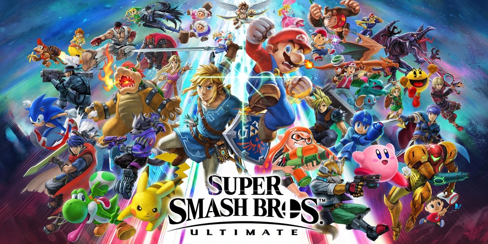
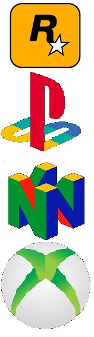

Przed tobą spis moich ulubionych gier wideo. Sprawdź, czy znasz je wszystkie! Do wszystkich gier będą linki.

Numer 5 - gry wideo które są darmowe i dobre:
Destiny 2
- to pierwszoosobowa strzelanina science-fiction z elementami RPG stworzona przez studio Bungie. Destiny 2 jest bezpośrednią
kontynuacją fabuły z pierwszej części gry, a akcja zaczyna się od upadku ostatniego bastionu ludzkości na Ziemi, który pada pod
atakiem Czerwonego Legionu i jego przywódcy Ghaula.
Team Fortress 2
- to strzelanina FPP nastawiona na rozgrywkę wieloosobową. Gra posiada pewne założenia fabularne, które sprowadzają się z grubsza do
tego, że rywalizuje ze sobą dwóch braci (i ich firm), którzy wynajmują w tym celu najemników.
ultimate custom night
- to Survival horror stworzony przez Scotta Cawthona, należący do popularnego cyklu Five Nights at Freddy's. W Ultimate Custom Night
gracz wciela się w stróża i za pomocą kamer, automatycznych drzwi i gadżetów musi przetrwać w budynku opanowanym przez opętane
animatroniki.
Numer 4 - gry wideo które kosztują grosze, ale są fenomenalne:
the escapists 2
- to nagrodzona symulacja ucieczki z więzienia, w której gracz przenosi się do potraktowanego z lekkim przymrużeniem oka więziennego
świata. Celem gry jest ucieczka, którą można przeprowadzić na kilka sposobów.
euro truck simulator 2
- to kontynuacja popularnego symulatora od czeskiego studia SCS Software. Euro Truck Simulator 2 pozwala wcielić się w kierowcę
ciężarówki, a zarazem właściciela firmy transportowej. Zabawa polega na przewożeniu ładunków pomiędzy różnymi miejscowościami na
terenie całej Europy.
the forest
- to gra w którejwcielamy się w człowieka, który przeżył katastrofę samolotu pasażerskiego. Bohater budzi się wewnątrz wraku, a
zadaniem gracza jest przetrwać, budując schronienie, dbając o podstawowe potrzeby fizjologiczne postaci, a także umiejętne radząc
sobie z niebezpieczeństwem czyhającym ze strony wrogów.

Numer 3 - gry wideo które są płatne, ale warte pieniędzy:
sekiro
- to gra zabiera nas do szesnastowiecznej Japonii, pełnej tajemnic i wyzwań, które czekają na odkrycie przez głównego bohatera. Gra
pozbawiona jest dziennika i mapy, co komplikuje dodatkowo i tak trudny tytuł jakim jest Sekiro: Shadows Die Twice.
super smash bros ultimate
- to popularna wśród graczy komputerowych bijatyka, jest to kontynuacja istniejącej już serii. Gracze mogą wcielić się w niej w swoich
ulubionych bohaterów z gier Kioto. Rozgrywka odbywa się na wielu poziomach.
super mario odyssey
- w tej grze Mario wyskakuje z Mushroom Kingdom i wyrusza w podróż przez tajemnicze, nowe miejsca, żeglując pomiędzy światami na
pokładzie statku powietrznego oraz rzucając swoją czapką. Zgodnie z tradycjami cyklu, gracze wcielają się w hydraulika imieniem Mario,
który musi uratować ukochaną księżniczkę Peach.
Numer 2 - gry wideo które są w x-box game pass i są świetne
microsoft flight simulator
- to realistyczny symulator samolotów cywilnych. Microsoft Flight Simulator wiernie odtwarza bogaty zestaw licencjonowanych maszyn i
obszar całej kuli ziemskiej, korzystając z danych satelitarnych, mocy obliczeniowej sztucznej inteligencji oraz chmury danych Azure.
7 days to die
- to gra, której akcja rozgrywa się w brutalnym, postapokaliptycznym świecie, gdzie wojna atomowa doprowadziła do niemal kompletnej
zagłady ludzkości. Jak by tego było mało, duża część ocalałej populacji została zarażona wirusem, który zabija w ciągu siedmiu dni i
przeobraża swoich nosicieli w zombie.
Assassin's Creed Origins
- to gra która zabiera nas do Egiptu i proponuje wyjątkowo duży świat do zwiedzenia. W grze wcielamy się w postać o imieniu Bayek, a
pomagać mu będą wierzchowce oraz oswojony orzeł, Senu.
Numer 1 - gry wideo w które musisz zagrać!
half-life 2
- tstrzelanka pierwszoosobowa osadzona w świecie science-fiction wydana 16 listopada 2004. Jest kontynuacją gry Half-Life i tak jak
ona, została stworzona przez studio Valve Corporation.Gra niemal jednomyślnie zdobyła uznanie czasopism branżowych i życzliwe
przyjęcie przez krytyków, zdobywając w roku 2004 ponad 35 tytułów „Gra Roku". Akcja gry toczy się w fikcyjnym mieście o nazwie City 17
oraz jego okolicach, w nieokreślonej, lecz bliskiej przyszłości. Jej bohaterem jest naukowiec, doktor Gordon Freeman. Doktor Freeman
zostaje rzucony w niebezpieczne środowisko, w którym skutki incydentu w kompleksie badawczym Black Mesa dosięgają społeczeństwa ludzi.
Freeman, chcąc przeżyć, zmuszony jest do walki z narastającymi trudnościami, a w potyczkach dołączają do niego rozmaici
sprzymierzeńcy, w tym jego byli współpracownicy, uciśnieni mieszkańcy miasta oraz vortigaunty.
super mario galaxy
- to kolejna odsłona słynnej serii platformówek z udziałem Mario, wyprodukowana przez studio Nintendo EAD Tokyo i wydana przez samo
Nintendo w listopadzie 2007 na konsolę Wii. SMG jest najwyżej ocenioną grą na Nintendo Wii i jedną z najlepiej ocenianych w
ogóle.Fabuła nie jest rozbudowana w większym stopniu niż poprzednie gry z serii. Mario otrzymuje list od księżniczki Peach, która ma
dla naszego bohatera specjalny prezent i zaprasza go na wizytę do swojego zamku. Mario przybywa w momencie, gdy atak przypuszcza
Bowser, który przy pomocy statków powietrznych wyrywa cały zamek z ziemi i zabiera go ze sobą do swojej galaktyki. Wąsaty hydraulik
próbuje wprawdzie ratować księżniczkę, ale nie udaje mu się to. Poznaje tajemniczą Rosalinę, która oznajmia mu, że do złapania Bowsera
bohater potrzebuje mocy wielu gwiazdek (tzw. Power Stars) rozmieszczonych w różnych galaktykach. Tak oto rozpoczyna się nowa odsłona
przygód Mario, który musi zwiedzać galaktyki w poszukiwaniu drogocennych gwiazd.
wiedźmin 3
- to fabularna gra akcji wyprodukowana i wydana przez CD Projekt Red. Akcja Wiedźmina 3 rozgrywa się w fikcyjnym świecie fantasy
stworzonym przez pisarza Andrzeja Sapkowskiego w serii opowiadań i powieści. Gracz ma okazję zwiedzić wyspy Skellige, Wolne Miasto
Novigrad, Oxenfurt, wiedźmińskie siedliszcze Kaer Morhen czy ponure moczary Velen. Gra rozpoczyna się pół roku po wydarzeniach z
poprzedniej części. Wiedźmin Geralt odzyskuje w końcu pamięć, nie ma jednak zamiaru przyłączyć się do którejkolwiek ze stron
konfliktu. Zamiast tego zajmuje się on poszukiwaniem Dzikiego Gonu oraz swoich bliskich, m.in. Yennefer z Vengerbergu i Ciri.